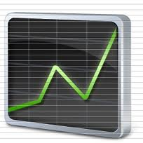

AUTOMATED ESSAY SCORE

Overall Score
| GRADE (0-5) | 3.50 |
|---|---|
| Spelling(0-5) | 4.95 |
| Grammar(0-5) | 1.20 |
| Coherence(0-5) | 4.34 |

Essay Statistics
| Word Count | 530 |
|---|---|
| Sentence Count | 35 |
| Paragraph Count | 6 |
| Average Sentence Length | 15.14 |
| Standard Deviation from the Average Sentence Length | 9.16 |

Spellings
Number of Misspelt Words ::5
Score :: 4.95
| Misspelt Word | Spelling Suggestions |
|---|---|
| weren | ['were', 'ween', 'wren', 'were n', 'renewer', 'Werner', 'Wernher', 'wencher', 'whereon', 'wherein'] |

Grammar
Score :: 1.20
| Sentences | Score |
|---|---|
| Our household might have been described as uncooperative. | 5 |
| When the tide was high, she would be standing on the inlet bridge with her plankton net. | 5 |
| When the tide was low, Mom could be found down on the mudflats. | 5 |
| When the tide was high, she would be standing on the inlet bridge with her plankton net. | 5 |
| Everything was subservient to the disposal of the tides. | 5 |
| Having studied, my mother is a marine biologist. | 5 |
| A Microscope in the Kitchen I grew up with buckets, shovels, and nets waiting by the back door; hip-waders hanging in the closet; tide table charts covering the refrigerator door; and a microscope was sitting on the kitchen table. | 4 |
| Our meals weren’t always served in the expected order of breakfast, lunch, and supper. | 4 |
| I grew up with buckets, shovels, and nets waiting by the back door; hip-waders hanging in the closet; tide table charts covering the refrigerator door; and a microscope was sitting on the kitchen table. | 4 |

Coherence
Score :: 4.34

Essay
A Microscope in the Kitchen
I grew up with buckets, shovels, and nets waiting by the back door; hip-waders hanging in the closet; tide table charts covering the refrigerator door; and a microscope was sitting on the kitchen table. Having studied, my mother is a marine biologist. Our household might have been described as uncooperative. Our meals weren’t always served in the expected order of breakfast, lunch, and supper. Everything was subservient to the disposal of the tides. When the tide was low, Mom could be found down on the mudflats. When the tide was high, she would be standing on the inlet bridge with her plankton net.I grew up with buckets, shovels, and nets waiting by the back door; hip-waders hanging in the closet; tide table charts covering the refrigerator door; and a microscope was sitting on the kitchen table. Having studied, my mother is a marine biologist. Our household might have been described as uncooperative. Our meals weren’t always served in the expected order of breakfast, lunch, and supper. Everything was subservient to the disposal of the tides. When the tide was low, Mom could be found down on the mudflats. When the tide was high, she would be standing on the inlet bridge with her plankton net.I grew up with buckets, shovels, and nets waiting by the back door; hip-waders hanging in the closet; tide table charts covering the refrigerator door; and a microscope was sitting on the kitchen table. Having studied, my mother is a marine biologist. Our household might have been described as uncooperative. Our meals weren’t always served in the expected order of breakfast, lunch, and supper. Everything was subservient to the disposal of the tides. When the tide was low, Mom could be found down on the mudflats. When the tide was high, she would be standing on the inlet bridge with her plankton net.I grew up with buckets, shovels, and nets waiting by the back door; hip-waders hanging in the closet; tide table charts covering the refrigerator door; and a microscope was sitting on the kitchen table. Having studied, my mother is a marine biologist. Our household might have been described as uncooperative. Our meals weren’t always served in the expected order of breakfast, lunch, and supper. Everything was subservient to the disposal of the tides. When the tide was low, Mom could be found down on the mudflats. When the tide was high, she would be standing on the inlet bridge with her plankton net.I grew up with buckets, shovels, and nets waiting by the back door; hip-waders hanging in the closet; tide table charts covering the refrigerator door; and a microscope was sitting on the kitchen table. Having studied, my mother is a marine biologist. Our household might have been described as uncooperative. Our meals weren’t always served in the expected order of breakfast, lunch, and supper. Everything was subservient to the disposal of the tides. When the tide was low, Mom could be found down on the mudflats. When the tide was high, she would be standing on the inlet bridge with her plankton net.
Vishnug0paL
Guide: Jisha Babu
Guide: Jisha Babu